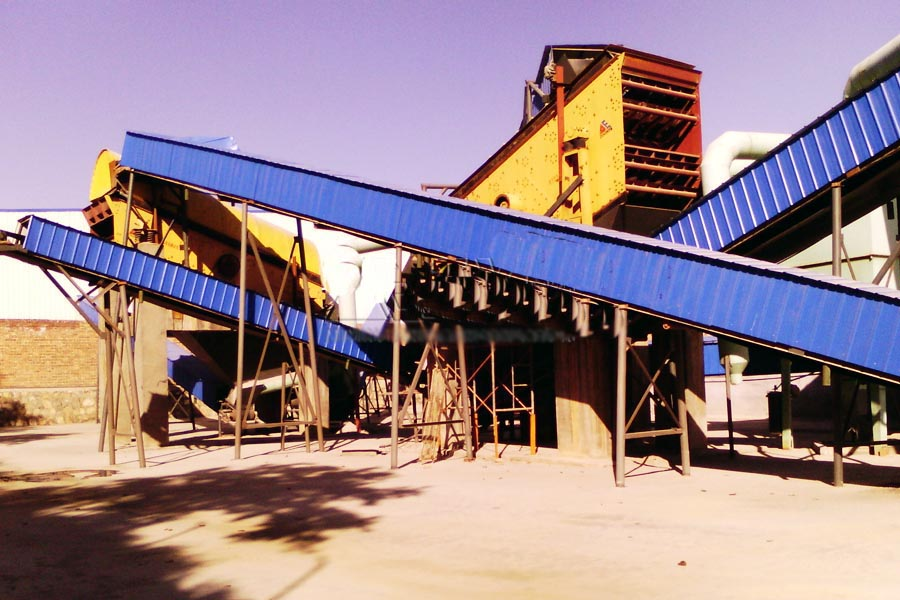

- Home >
- application case >
- Construction Waste Recycling Plant

Construction waste crushing production line

Mobile construction waste crushing station for urban construction waste crushing.
Construction Waste Recycling Plant
Weinan in Shaanxi Province will build a Construction Waste Recycling Plant
With the development of the city, construction waste a lot, due to the lack of timely and effective treatment, a lot of construction waste landfill or by simple air storage, not only affect the cityscape, also a waste of resources and environmental pollution. This national call for recycling construction waste, construction demonstration area of unified disposal of construction waste as soon as possible. Recently, this reporter learned from the weinan city, Shaanxi Province Government, the municipal government plans to build a new waste disposal eco-environmental Park, which contains a treatment capacity of 2 million tons/year of construction waste processing plant project, is expected to be operational in 2015. Meanwhile, the city’s first building waste treatment plant has been operated by the enterprise to complete plant construction is expected to completed and put into operation in the first half of this year. After the completion of the project, allowing tens of thousands of tons of construction waste into new green bricks.

Good quality of construction waste recycled brick in normal brick, obvious economic benefits.
The product performance of building waste brick depends on the characteristics of raw materials and the mechanical product of the molding machine. It is also in accordance with JC943-2004 “concrete perforated brick” and NY/T671-2003. In addition, the structure performance of the product is between the sintered product and the non sintered product, the bulk density and water absorption rate is superior to the ordinary concrete brick, the dry shrinkage and the thermal conductivity coefficient is smaller than that of the ordinary concrete product. As the main raw material for production and transportation costs, which in the cost accounting will have great profit margins, plus VAT, income tax and maintenance fee waiver, for enterprises, will undoubtedly increase greater market competitiveness and economic benefits obvious. In addition, social and environmental benefits are also very obvious.
Following CAG mineral building waste brick production line some success stories
(1) environmental company successfully introduced CAG mine in Zhengzhou, Chengdu, Sichuan machine complete set of construction garbage bricks production line equipment
(2) construction garbage bricks used building material co, Dongguan, Guangdong production line by CAG mineral supply, the production of natural tile extrusion strength and other indicators are more than common brick
(3) Shanghai CAG mineral building waste brick production line of complete set of equipment building waste treatment plant in Chongqing was commended
Leave Me A Message, Now
If you have any questions regarding equipment prices, production line configuration or other problems, you can send a message to us, we will contact you soon.